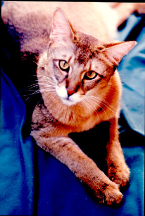

The Chausie /ˈtʃaʊsi/ is a domestic breed of cat that was developed by breeding a few individuals from the nondomestic species jungle cat (Felis chaus) to a far greater number of domestic cats (Felis catus). The Chausie was first recognized as a domestic breed by The International Cat Association (TICA). Within the domestic breeds, the Chausie is categorized as a nondomestic hybrid source breed.[1] Other domestic breeds in this category include the Bengal and the Savannah. Because Chausies are mostly descended from domestic cats, by about the fourth generation they are fully fertile and completely domestic in temperament. Chausies should be tall, long, and lean, with very long legs and medium boning. The torso is deep-chested with flat sides. The ears are broad, tall, and set high on the head, about two fingers apart. The cheekbones are striking—prominent, long, and angular—and the eyes are flattened on top and form a half oval below. The coat is short, and the cats can come in three colors: solid black, black grizzled tabby, and black (brown) ticked tabby. Gold or yellow eye color is preferred, though yellower and lighter shades of green are allowed.
References:
This article uses material from the Wikipedia article ”Chausie", which is released under the Creative Commons Attribution-Share-Alike License 3.0.
"Chausie fugao" by Nowinsea - Own work. Licensed under CC BY-SA 3.0 via Wikimedia Commons
{kind=link}